Unlocking single cell spatial omics analyses with scdney - IMC
Yue Cao, Andy Tran, Dario Strbenac, Nicholas Robertson Jean Yang
15 October, 2023
breastCancerIMC.Rmd
## library(devtools)
## library(BiocManager)
library(SingleCellExperiment)
library(ggplot2)
library(scFeatures) ## devtools::install_github("SydneyBioX/scFeatures")
library(ClassifyR) ## BiocManager::install("ClassifyR", dependencies = TRUE)
library(lisaClust)
library(ggthemes)
library(spicyR) ## BiocManager::install("spicyR")
library(dplyr)
library(limma)
library(plotly)
library(scattermore)
library(tidyr)
library(survival)
library(survminer)
library(spatstat)
library(scater)
library(scran)
library(reshape)
theme_set(theme_classic())
# code for plotting purpose
plot_boxplot <- function( feature ){
data_plot <- t(feature)
data_plot <- melt(data_plot )
colnames(data_plot) <- c("X1", "X2", "value")
data_plot$condition <- unlist( lapply( strsplit( as.character( data_plot$X2), "_cond_"), `[`, 2))
p <- ggplot(data_plot, aes( x = X1, y = value , colour = condition)) +
geom_boxplot() +
theme(axis.text.x = element_text(angle = 45, vjust = 1, hjust=1))
return(p)
}
plot_barplot <- function(data , dodge=F ){
data$patient <- unlist( lapply( strsplit( rownames(data ), "_cond_"), `[`, 1))
data$condition <- unlist( lapply( strsplit( rownames(data ), "_cond_"), `[`, 2))
data <- as.data.frame( melt(data, id=c("patient", "condition")) )
p <- ggplot(data , aes( x = patient , y = value , fill = variable) ) +
geom_bar(stat="identity" ) + facet_wrap(~condition, scale="free") +
theme(axis.text.x = element_text(angle = 45, vjust = 1, hjust=1))
return (p)
}
draw_dotplot <- function(data_sce, sample, celltype , group , group_of_interest ){
df <- data.frame(colData( data_sce))
# for each patient, calculate the proportion of each cell type in each region.
df_plot <- NULL
for ( thispatient in unique(df[[sample]])){
this_df <- df[df[[sample]]== thispatient, ]
temp_df <- table( this_df$region, this_df[[celltype]] )
temp_df <- temp_df / rowSums(temp_df)
temp_df <- data.frame( temp_df)
temp_df$patient <- thispatient
temp_df$group <- clinical[clinical[[sample]] == thispatient, group ]
df_plot <- rbind(df_plot, temp_df)
}
# for each region, calculate the average proportion of each cell type across all individuals
df_plot <- df_plot %>% dplyr::group_by( Var1 , Var2, group) %>%
summarise(mean_proportion = mean(Freq))
# we are only interested in the short term and long term survival individuals
df_plot <- df_plot [ df_plot$group %in% group_of_interest, ]
p <- ggplot(df_plot, aes(y = Var2, x = Var1 ,colour =mean_proportion , size = mean_proportion ))+
geom_point() +
facet_grid(~group, scales = "free", space = "free" ) +
theme(axis.text.x = element_text(angle = 45, vjust = 1, hjust=1)) +
xlab("Region" ) + ylab("Cell type") + scale_colour_viridis_c()
return(p)
}
draw_region_clustering_result <- function( data_sce, sample , selected_sample ){
# get meta data for a selected patient to visualise
metadata <- colData(data_sce)
metadata <- metadata[metadata[[sample]] == selected_sample , ]
metadata <- data.frame(metadata)
plotlist <- list() # define the list to store images for region highlighting
plotlist_celltype <- list() # define the list to store images for celltype highlighting
# optional: define a colour palette
# you can also specify your own colour to use in the variable color_codes
tableau_palette <- scale_colour_tableau( palette = "Tableau 20")
color_codes <- tableau_palette$palette(18)
color_codes <- c(color_codes, "darkgrey") # for all other regions apart from region of interest, make the colour grey
names(color_codes) <- c(unique(metadata$description) , "other regions")
# look through each region to highlight the region of interest, as well as the cell type in the region of interest
for ( thisregion in sort(unique(metadata$region))){
# select the region of interest
selected_region_index <- metadata$region == thisregion
# for all other regions, define them as "other regions" so that they will be greyed out
metadata$selected_region <- "other regions"
metadata$selected_region[selected_region_index] <- "selected region"
# for all cell types outside the region of the interest, also make them greyed out
metadata$celltype <- metadata$description
metadata$celltype[!selected_region_index ] <- "other regions"
metadata$celltype <- factor(metadata$celltype, levels = c(unique(metadata$description), "other regions"))
# plot ggplot highlighting the region of interest
p <- ggplot(metadata, aes(x = Location_Center_X , y = Location_Center_Y , colour = selected_region )) + geom_point(alpha = 0.7) + ggtitle(thisregion) + scale_colour_manual(values = c("grey" , "red"))
# plot ggplot highlighting the celltypes in the region of interest
p2 <- ggplot(metadata, aes(x = Location_Center_X , y = Location_Center_Y , colour = celltype )) + geom_point(alpha = 0.7 ) + ggtitle(thisregion) + scale_colour_manual(values = color_codes)
plotlist [[thisregion ]] <- p
plotlist_celltype [[thisregion ]] <- p2
}
a <- ggarrange(plotlist = plotlist , ncol = 5, nrow = 1 , common.legend = T )
b <- ggarrange(plotlist = plotlist_celltype , ncol = 5, nrow = 1 , common.legend = T )
return (list(a,b))
}
draw_selected_region_boxplot <- function(data_sce, sample , celltype, group , group_of_interest, select_region){
df <- clinical[colData(data_sce)[, sample ], ]
df$region <- data_sce$region
df[[celltype]] <- data_sce[[celltype]]
df_plot <- NULL
for ( thispatient in unique(df[[sample]])){
this_df <- df[df[[sample]] == thispatient, ]
temp_df <- table( this_df$region, this_df[[celltype]] )
temp_df <- temp_df / rowSums(temp_df)
temp_df <- data.frame( temp_df)
temp_df$patient <- thispatient
temp_df$group <- unique( this_df[[group]])
df_plot <- rbind(df_plot, temp_df)
}
df_plot_region <- df_plot[df_plot$Var1 == select_region , ]
df_plot_region <- df_plot_region [ df_plot_region$group %in% group_of_interest, ]
p <- ggplot(df_plot_region, aes(x = Var2, y = Freq, colour = group)) +
geom_boxplot()+
theme(axis.text.x = element_text(angle = 45, vjust = 1, hjust=1)) +
ylab("Proportion") + xlab("Cell type") + ggtitle("Selected region") + ylim(0, 0.25)
return(p )
}Overview
As single cell technology advances, the recent development of spatial omics allows us to examine the spatial organisation of cells within tissues in their native environment. This workshop will discuss the challenges and analytical focus associated with using multi-sample spatial datasets for disease risk prognosis. We will also talk about general analytical strategies and the critical thinking questions that arise in the workflow.
Preparation and assumed knowledge
- Knowledge of R syntax
- Familiarity with the SingleCellExperiment class
- Basic knowledge in single cell data analysis. You can access our previous workshops for a quick review in single cell data analysis.
- Ability to install all required R packages, please check
sessionInfoat the end of this document to ensure you are using the correct version. - Familiarity with our previous workshop vignette on Introduction to Single Cell RNA-seq Analysis
Learning objectives
- Describe and visualise spatial omics datasets
- Calculate different measures that describe the spatial distribution of cell types
- Generate individual feature representations from a cell-level expression matrix
- Perform multi-view disease outcome prognosis with the package
ClassifyR - Develop understanding on
- how to assess the performance of classification and survival
models
- how to identify and assess individual performance given a survival model.
- how to assess the performance of classification and survival
models
- Explore various strategies for disease outcome prognosis using
spatial omics data
Note: This data analysis workshop offers
participants the opportunity to engage in hands-on analysis using R.
However, if you are not comfortable with coding in R, you can still
acquire valuable interpretation skills by reviewing the output we
provide in this file.
Initial exploration and visualisation
Data and background
The widely-known METABRIC breast cancer cohort has recently had imaging mass cytometry (cell-level resolution) generated for a subset of it. The publication describing this data is Imaging Mass Cytometry and Multiplatform Genomics Define the Phenogenomic Landscape of Breast Cancer, Nature Cancer, 2020. There are 483 cancer samples with IMC data. However, the subset of interest is those individuals who do not have lymph node metastasis. Can their risk of recurrence accurately be estimated and therefore inform how aggressively they need to be treated? The other component of the analysis is patient clinical data, which has been sourced from Supplementary Table 5 of Dynamics of Breast-cancer Relapse Reveal Late-recurring ER-positive Genomic Subgroups, Nature, 2019. The original data has been restricted to images with at least 400 cells, no lymph node cancer and Stage 1.
## Quick look at data
assay(data_sce)[1:5, 1:5]## MB-0002:345:93 MB-0002:345:107 MB-0002:345:113 MB-0002:345:114
## HH3_total 4.82032390 3.8229411 2.55845170 4.82208870
## CK19 1.21185160 1.3223530 0.13832258 0.33366668
## CK8_18 2.80274720 2.4720588 0.60545164 2.43351100
## Twist 0.14651649 0.1176471 0.09877419 0.20791112
## CD68 0.07863736 0.1016471 0.03225806 0.05237778
## MB-0002:345:125
## HH3_total 2.41391110
## CK19 0.07055555
## CK8_18 0.20724444
## Twist 0.12004445
## CD68 0.00000000Basic characteristics of the data objects:
- The dataset contains 38 proteins and 76307 cells.
- The outcome is recurrence-free survival.
Exploration 1: How complex is my data?
At the start of any analysis pipeline, it is often good to explore the data to get a sense of the complexity. We usually do this by exploring the distribution of the outcomes and various variables in the individuals’ meta-data. Here, we use cross-tabulation to examine the following variables:
- Surgery vs death
- ER status
- Grade
print("Stage and death")## [1] "Stage and death"
table(clinical$Breast.Surgery, clinical$Death, useNA = "ifany") ##
## 0 1
## BREAST CONSERVING 38 14
## MASTECTOMY 16 6
## <NA> 2 1
print("Number of individuals based on ER status")## [1] "Number of individuals based on ER status"
table(clinical$ER.Status)##
## neg pos
## 12 64
print("Number of individuals based on Grade")## [1] "Number of individuals based on Grade"
table(clinical$Grade)##
## 1 2 3
## 14 30 28Exploration 2: How to visualise my data?
Typically in single-cell data analysis, we perform dimension reduction to project the high dimensional cell x gene matrix on to 2D space. This allows us to visualise various things of interest, such as distribution of cell types and disease outcomes. In this dataset, cells were classified into 22 cell types based on their markers.
data_sce <- runUMAP(data_sce, scale=TRUE)
# With the UMAP function we can highlight by meta data of interest
# Here we highlight the cell types and sample ID
a <- plotUMAP(data_sce, colour_by = "description")
b <- plotUMAP(data_sce, colour_by = "metabricId")
ggarrange( plotlist = list(a,b))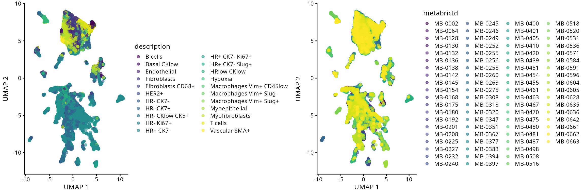
Interactive Q&A:
What can we learn from these illustrations? Is there anything interesting in the plot? Questions to consider include:
- Q1: Does each cell type cluster together?
- Q2: When there is a large number of categories, are dimensionality reduction plots interpretable or misleading due to overplotting?
Visualise selected patient:
Here we selectively visualise two individuals by highlighting only the
selected individuals.
# Extract the meta data and the UMAP dimension of the dataset
metadata <- colData(data_sce)
metadata <- cbind(metadata, reducedDim(data_sce, "UMAP"))
metadata <- data.frame(metadata)
# For the selected patient MB-0475, denote it as "selected patient"
# and all other individuals as "other individuals"
metadata$selected_patient <- ifelse(metadata$metabricId == "MB-0475", "seleted patient" , "other individuals")
# Generate a UMAP plot and store it in R object `a`
a <- ggplot(metadata, aes(x =UMAP1 , y = UMAP2 , colour = selected_patient )) + geom_scattermore(pointsize = 0.5) + scale_colour_manual(values = c("grey" , "red"))
# For the selected patient MB-0628, denote it as "selected patient"
# and all other individuals as "other individuals"
metadata$selected_patient <- ifelse( metadata$metabricId == "MB-0628", "seleted patient" , "other individuals")
# Generate a UMAP plot and store it in R object `b`
b <- ggplot(metadata, aes(x =UMAP1 , y = UMAP2 , colour = selected_patient )) + geom_scattermore(pointsize = 0.5) + scale_colour_manual(values = c("grey" , "red"))
ggarrange(plotlist = list(a,b ))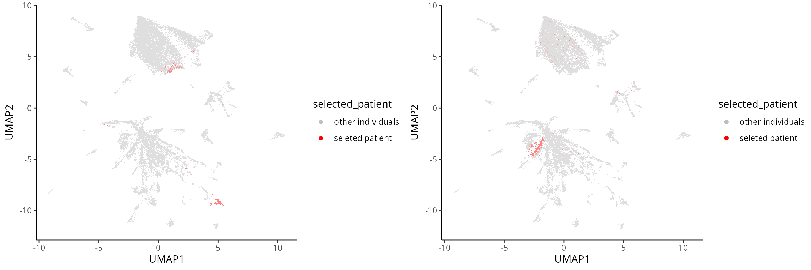
Exploration 3: Is there a spatial structure in my data?
The advantage with spatial omics is that we can examine the
organisation of the cell types as it occurs on the tissue slide. Here,
we visualise one of the slides from a patient. As an optional exercise,
you can: - permute the cell type label.
- permute the spatial coordinate.
to give a sense of what is random ordering.
Spatial plot
We select a particular patient “MB-0263” and visualise its spatial pattern using ggplot.
# obtaining the meta data for this patient
one_sample <- data_sce[, data_sce$metabricId == "MB-0263"]
one_sample <- colData(one_sample)
one_sample <- data.frame(one_sample)
a <- ggplot(one_sample, aes(x = Location_Center_X, y = Location_Center_Y, colour = description)) +
geom_point(alpha=0.7) +
scale_colour_tableau() +
ggtitle("Original slide")
a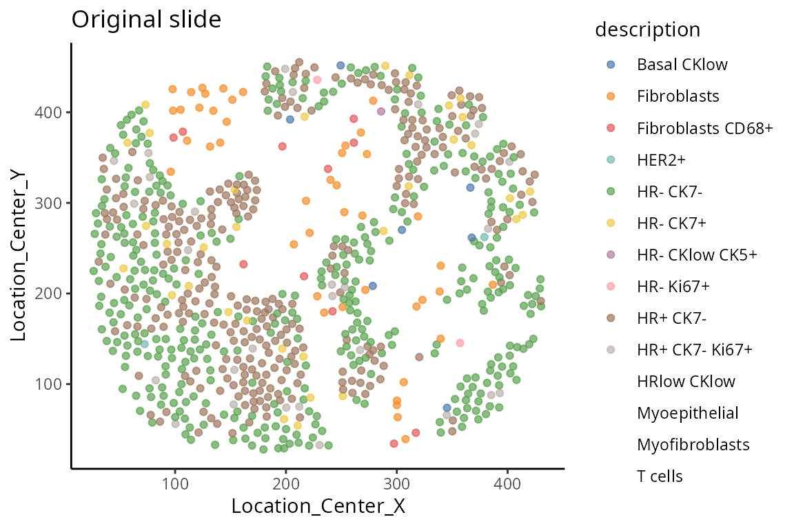
[Optional code] Random spatial pattern
The code here investigates permutations of spatially resolved data. Please examine the next tab for actual results.
# "Optional: Permute the cell type labels"
one_sample$description_permute <- sample(one_sample$description)
b <- ggplot(one_sample, aes(x = Location_Center_X , y = Location_Center_Y, colour =description_permute)) + geom_point(alpha=0.7) + scale_colour_tableau() + ggtitle("Permute the cell type label")
# "Optional: Permute the spatial coordinate"
one_sample$Location_Center_X_permute <- sample(one_sample$Location_Center_X)
one_sample$Location_Center_Y_permute <- sample(one_sample$Location_Center_Y)
c <- ggplot(one_sample, aes(x = Location_Center_X_permute , y = Location_Center_Y_permute, colour = description)) + geom_point(alpha=0.7) + scale_colour_tableau() + ggtitle("Permute the X, Y coordinate")Spatial structure
The aim here is to have an understanding of the concept of spatial randomness. Spatial statistics is a topic of study that encompasses a wide range of research. The next two code chucks focus on the examination of two distinct permutation strategies. The objective of this investigation is to gain an understanding of how various permutation strategies might yield varied perceptions of randomness.
## ggarrange provides a way to arrange multiple ggplots for efficient visual comparison
ggarrange( plotlist = list(a, b, c), ncol = 3) 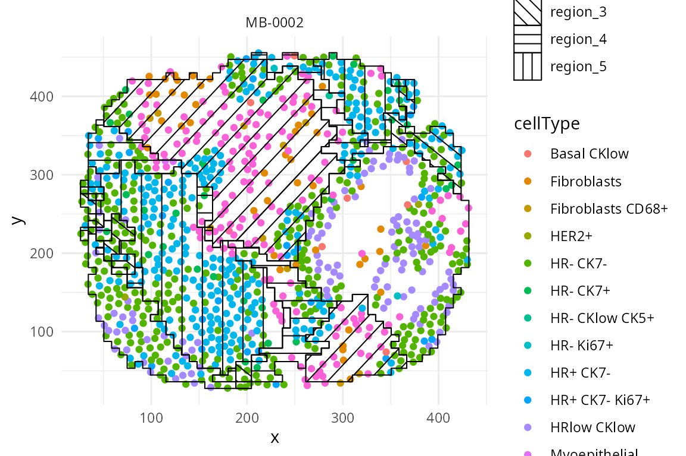
Interactive Q&A:
Q3: Is there a structure in the data or is the cell type randomly distribution?
Describing tissue microenvrionments and cellular neighbourhoods
Spatial data allow for the identification of a variety of characteristics including distinct cell types within an image, providing an overview of the tissue environment. This allows scientists to explore the cellular architecture and environment and its association with phenotype information (e.g meta-data). For our data story, we are interested in whether the individuals have a good or poor outcome. The outcome is often called a ‘prognosis’ and a good outcome is sometimes called ‘favourable’. In this section, we examine graphically how cell-type co-localisation varies across spatial regions and how is such information associated with individual survival outcome.
Do cell type co-localise in specfic regions?
We begin by examining how can we identify and visualise regions of tissue where spatial associations between cell-types are similar. There are many packages that perform this task and here we use the lisaClust function that is based on “local L-function” to spatially cluster cells into different regions with similar cell type composition.
This has already been pre-loaded for you. Please proceed to the next task.
set.seed(51773)
BPPARAM <- MulticoreParam(16)
# Cluster cells into spatial regions with similar composition.
data_sce <- lisaClust(
data_sce ,
k = 5,
Rs = c(20, 50, 100),
sigma = 50,
spatialCoords = c("Location_Center_X", "Location_Center_Y"),
cellType = "description",
imageID = "ImageNumber" ,
regionName = "region",
BPPARAM = BPPARAM
)Which regions appear to be different between good and poor prognosis?
We have use the lisaClust function in the previous
subsection to cluster cells into five different spatial regions. Next,
as a case study, we will compare individuals with good or poor prognosis
and examine graphically, if any regions appear to be different between
good or poor prognosis. We define:
- Good prognosis as individuals with > 10 years recurrence-free
survival and - Poor prognosis as individuals with < 5 years
recurrence-free survival.
using the code below and store the information under
clinical$survivalgroup. The recurrence free survival (RFS)
is provided in the variable timeRFS
## Extract time to recurrence-free survival
clinical$survivalgroup <- "neither"
## Define poor and good prognosis
clinical$survivalgroup[which( clinical$timeRFS < 5* 365) ] <- "poor"
clinical$survivalgroup[which( clinical$timeRFS > 10* 365) ] <- "good"Individual level
Here we visualise the spatial domain (regions) detection result based on one individual. We can either visualise all regions in one graph or highlighting each region in separate graphs. Here we will use the terminology “spatial domain” and “regions” interchangeably.
Depending on the number of regions, it may be more useful to
visualise the spatial regions either collectively in a single graph or
separately in multiple graphs. To visualise it in a single graph, the
hatchingPlot() function is used to create hatching patterns
for representating spatial regions and cell-types. The hatching geom is
used to create hatching patterns for representation of spatial
regions.
## To visualise it in a single graph
hatchingPlot(
data_sce,
region = "region",
imageID = "metabricId",
cellType = "description",
spatialCoords = c("Location_Center_X", "Location_Center_Y") ) 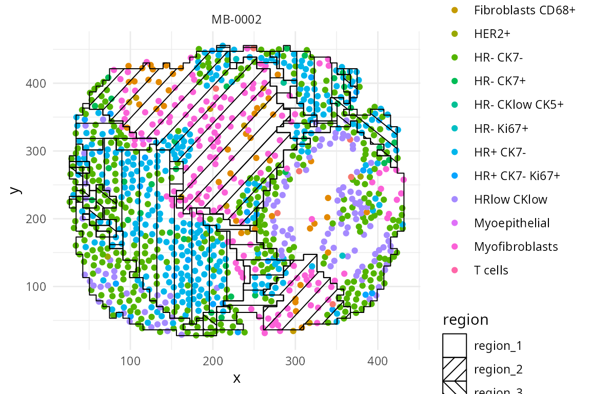
We have written a small function
draw_region_clustering_result to visualise the data
separately in multiple graphs for the individual
MB-0628.
draw_region_clustering_result(data_sce ,
sample = "metabricId" ,
selected_sample = "MB-0628" )## [[1]]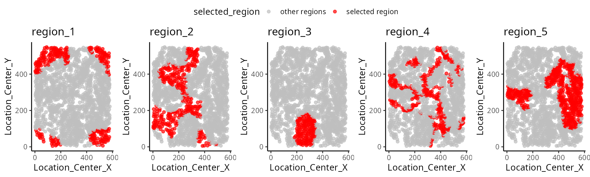
##
## [[2]]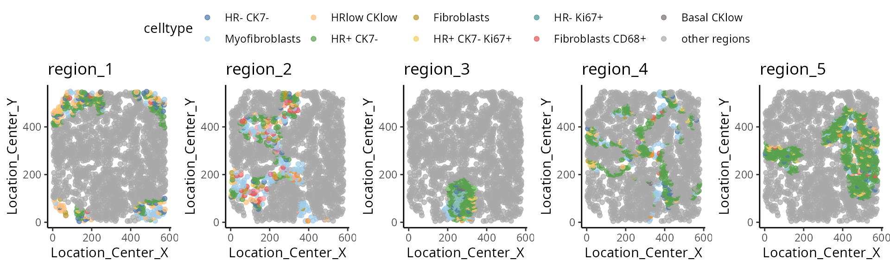
Across individuals
We can better interpret the region output by summarising the proportion of each cell type in a region across the individuals. We look at the composition of cell types in each region, and compare between prognostic outcomes.
draw_dotplot(data_sce,
sample = "metabricId" ,
celltype = "description" ,
group= "survivalgroup" ,
group_of_interest = c("poor" , "good"))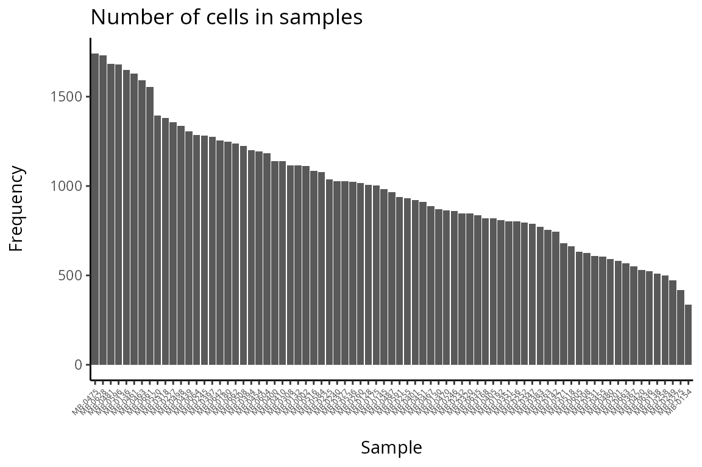
Interactive Q&A:
Q4: Which regions appear to be different between poor prognosis (short-term survival) and good prognosis (long-term survival) individuals?
Further exploration by visualising selected regions
The number of sub-cell types increase considerably when we want to
add spatial domain (region) information. To enhance clarity and
facilitate understanding, it may be helpful to choose a predetermined
region. The code generates a set of boxplots that enable the comparison
of cell type proportions between individuals with good and
poor prognosis in region_5.
draw_selected_region_boxplot(data_sce,
sample = "metabricId" ,
celltype ="description" ,
group = "survivalgroup",
group_of_interest = c("poor" , "good"),
select_region = "region_5")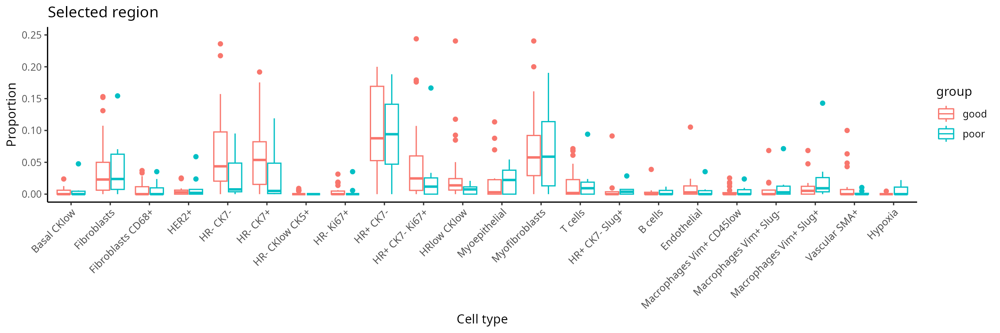
How do we generate a molecular representation for each individual?
In this workshop, we use the scFeatures package to generate a
molecular representation for each individuals from the matrix of
features x cells. The molecular representation is
interpretable and hence facilitates downstream analysis of the
individual. In general, scFeatures generates features
across six categories representing different molecular views of cellular
characteristics. These include:
- cell type proportions
- cell type specific gene expressions
- cell type specific pathway expressions
- cell type specific cell-cell interaction (CCI) scores
- overall aggregated gene expressions
- spatial metrics
The different types of features constructed enable a more
comprehensive multi-view understanding of each individual from a matrix
of spot x cells. By default, the function will generate a
total of 13 different types of features (feature_types) shown below and
store them in a list. All generated feature types are stored in a matrix
of samples x features.
## [1] "proportion_raw" "proportion_logit" "proportion_ratio"
## [4] "gene_mean_celltype" "gene_prop_celltype" "gene_cor_celltype"
## [7] "gene_mean_bulk" "gene_prop_bulk" "gene_cor_bulk"
## [10] "L_stats" "celltype_interaction" "morans_I"
## [13] "nn_correlation"In additional to the spatial measure, we can also consider region
information as an additional layer of information. Thus, the following
code aims to create cell-type specific features for each region. We use
the function “paste0” to construct region-specific sub-cell
types and name it as celltype in the R object
data_sce. For simplicity, in this workshop, the variable
celltype in the R object data_sce refers to
region-specific sub-cell types.
region <- data_sce$region
# Define a series of sub-cell types that is regional specific
data_sce$celltype <- paste0( data_sce$description , "-" , region)
print("Nnumber of cells in each sample")## [1] "Nnumber of cells in each sample"
DT::datatable( data.frame(table( data_sce$metabricId )) , options = list(scrollX = TRUE))
print("Number of cells in each region-specific sub-cell type")## [1] "Number of cells in each region-specific sub-cell type"
DT::datatable( data.frame(table( data_sce$celltype)) , options = list(scrollX = TRUE))Discussion:
Q6: Are there any samples or cell types you would like to remove from the data?
How to create molecular representations of individuals?
There are different ways you can use scFeatures to
generate molecular representations for individuals and it requires the
following information for spatial data.
- data,
- sample,
- X coordinates,
- Y coordinates,
- feature_types, and
- type
There are a total of 13 different types of features (feature_types)
that you can choose to generate. The argument type refers the type of
input data we have. This is either scrna (single-cell
RNA-sequencing data), spatial_p (spatial proteomics data),
or spatial_t (single cell spatial data).
Calculate feature_types
Suppose that we are interested in determining the proportion of each
cell type in each individual within each region. It is necessary to
specify type = spatial_p to reflect that we have spatial
proteomics data and feature_types = proportion_raw to
indicate we intend to calculate cell type proportion for each of the
region-specific sub-cell types.
## [A] The next few lines extract specific information from data_sce as input to scFeatures.
## Extract the expression matrix from data_sce
IMCmatrix <- assay(data_sce)
## Extract the sample information
## append the condition to the individuals so we can easily retrieve the individuals condition
sample <- data_sce$metabricId
cond <- clinical[match(sample, clinical$metabricId), ]$survivalgroup
sample <- paste0(sample, "_cond_", cond )
## Extract the region-specific sub-cell types
celltype <- data_sce$celltype
## Extract the spatial coordinates
spatialCoords <- list(colData(data_sce)$Location_Center_X, colData(data_sce)$Location_Center_Y)
### [B] Running scFeatures
scfeatures_result <- scFeatures( IMCmatrix,
sample = sample,
celltype = celltype,
spatialCoords = spatialCoords,
feature_types = "proportion_raw",
type = "spatial_p" )The generated feature is a matrix of samples x features,
the code below shows the first 5 features and the first 5 individuals
for the region-specific sub-cell types.
scfeatures_result$proportion_raw[1:5, 1:5]## B cells-region1 B cells-region2 B cells-region3
## MB-0002_cond_neither 0.0000000000 0.000000000 0
## MB-0064_cond_neither 0.0000000000 0.000000000 0
## MB-0128_cond_good 0.0009950249 0.044776119 0
## MB-0130_cond_good 0.0000000000 0.000000000 0
## MB-0132_cond_neither 0.0000000000 0.007174888 0
## B cells-region4 B cells-region5
## MB-0002_cond_neither 0.00000000 0.000000000
## MB-0064_cond_neither 0.00000000 0.000000000
## MB-0128_cond_good 0.06666667 0.007960199
## MB-0130_cond_good 0.00000000 0.000000000
## MB-0132_cond_neither 0.00000000 0.000000000Focus sub-cell type
Suppose we are only interested in the molecular representation for
individuals r HR- CK7+ only within region 5.
## [A] The next few lines extract specific information from data_sce as input to scFeatures.
## Select the HR- CK7+-region sub-cell type
index <- grep("HR- CK7+-region" , data_sce$celltype, fixed=TRUE)
selected_data <- IMCmatrix[, index]
selected_sample <- sample[index]
selected_celltype <- data_sce$celltype[ index]
selected_spatialCoords <- list(colData(data_sce)$Location_Center_X[index],
colData(data_sce)$Location_Center_Y[index])
### [B] Running scFeatures
scfeatures_result <- scFeatures( selected_data,
sample = selected_sample,
celltype = selected_celltype,
spatialCoords = selected_spatialCoords,
feature_types = "proportion_raw", type = "spatial_p" )
### [C] Visualize the regional composition makeup for each individual for HR- CK7+ and HR- CK7-
feature <- scfeatures_result$proportion_raw
feature <- feature[ grep("poor|good", rownames(feature)), ]
plot_barplot( feature ) + ggtitle("Proportion raw feature")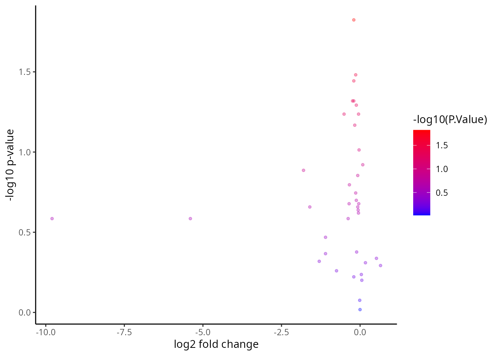
All cell types and features in one line of code
The code below enable us to generate all feature types for all cell types in a line. Due to limitations with today’s computational capacity, ** Please DO NOT run it in today’s workshop, it will crash your system**.
# here, we specify that this is a spatial proteomics data
# scFeatures support parallel computation to speed up the process
scfeatures_result <- scFeatures(IMCmatrix,
type = "spatial_p",
sample = sample,
celltype = celltype,
spatialCoords = spatialCoords,
ncores = 32)What can we learn from the outputs from scFeatures?
Assuming you have already generated a collection of molecular
representation for individuals, please load the prepared RDS file
scfeatures_result.RDS. Again, you can remind yourself that
all generated feature types are stored in a matrix of
samples x features.
# Upload pre-generated RDS file
scfeatures_result <- readRDS("~/biocasia_data/scfeatures_result.RDS")
# we have generated a total of 13 feature types
names(scfeatures_result)## [1] "proportion_raw" "proportion_logit" "proportion_ratio"
## [4] "gene_mean_celltype" "gene_prop_celltype" "gene_cor_celltype"
## [7] "gene_mean_bulk" "gene_prop_bulk" "gene_cor_bulk"
## [10] "L_stats" "celltype_interaction" "morans_I"
## [13] "nn_correlation"
# What is the number of features that we have generated
lapply(scfeatures_result, dim)## $proportion_raw
## [1] 77 110
##
## $proportion_logit
## [1] 77 110
##
## $proportion_ratio
## [1] 77 5995
##
## $gene_mean_celltype
## [1] 77 4180
##
## $gene_prop_celltype
## [1] 77 4180
##
## $gene_cor_celltype
## [1] 77 27958
##
## $gene_mean_bulk
## [1] 77 38
##
## $gene_prop_bulk
## [1] 77 38
##
## $gene_cor_bulk
## [1] 77 703
##
## $L_stats
## [1] 77 3842
##
## $celltype_interaction
## [1] 77 4393
##
## $morans_I
## [1] 77 38
##
## $nn_correlation
## [1] 77 38Association study - can we identify “differential expression” for a feature of interest
The R object scfeatures_result contains a variety of
features. A important question focuses on the identification of features
that reflect an association with the prognostic outcome, specifically
distinguishing between good and poor outcomes. The code provided below
demonstrates the use of the limma() function to fit a
linear model for the purpose of analysing gene_mean_celltype as an
illustration feature. The feature type known as
gene_mean_celltype represents the mean protein expression
for each sub-cell type specific to a spatial region. It is a matrix
consisting of 77 individuals and 4180 features. It is important to
acknowledge that within the context of our IMC data, the term “gene” is
used to refer to “protein”.
# Extract cell type specific gene expression for all regions.
gene_mean_celltype <- scfeatures_result$gene_mean_celltype
# Extract HR+ CK7 cell type specific gene expression for Region5
index <- grep( "HR+ CK7--region5", colnames(gene_mean_celltype) , fixed= T)
gene_mean_celltype <- gene_mean_celltype [, index]
# transpose to ensure we have gene by sample matrix
gene_mean_celltype <- t(gene_mean_celltype)
# Extract the two conditions of interest - poor prognosis vs good prognosis
condition <- unlist( lapply( strsplit( colnames(gene_mean_celltype) , "_cond_"), `[`, 2))
condition <- data.frame(sample = colnames(gene_mean_celltype), condition = condition )
select_index <- which( condition$condition %in% c("poor", "good" ))
condition <- condition[ select_index, ]
gene_mean_celltype<- gene_mean_celltype [ , select_index]
# Calculate log fold change each protein using limma
design <- model.matrix(~condition, data = condition)
fit <- lmFit(gene_mean_celltype, design)
fit <- eBayes(fit)
tT <- topTable(fit, n = Inf)
tT$gene <- rownames(tT)
tT[1:5,]## logFC AveExpr t P.Value adj.P.Val
## HR+ CK7--region5--c_Myc -0.2026693 0.3930301 -2.534247 0.01502026 0.2743783
## HR+ CK7--region5--CAIX -0.1398111 0.4082151 -2.202695 0.03306478 0.2743783
## HR+ CK7--region5--Twist -0.2007777 0.4171795 -2.170854 0.03554873 0.2743783
## HR+ CK7--region5--vWF_CD31 -0.2401160 0.7328167 -2.036814 0.04789991 0.2743783
## HR+ CK7--region5--EpCAM -0.1988532 0.6477055 -2.031460 0.04846277 0.2743783
## B gene
## HR+ CK7--region5--c_Myc -3.168084 HR+ CK7--region5--c_Myc
## HR+ CK7--region5--CAIX -3.614202 HR+ CK7--region5--CAIX
## HR+ CK7--region5--Twist -3.654733 HR+ CK7--region5--Twist
## HR+ CK7--region5--vWF_CD31 -3.820559 HR+ CK7--region5--vWF_CD31
## HR+ CK7--region5--EpCAM -3.827018 HR+ CK7--region5--EpCAMWe visualise the comparison using a volcano plot and a dotplot for the cell type specific expression feature. This is a type of scatter-plot that is used to quickly identify changes in large datasets and represent the significance (y-axis) versus effect size or fold-change (x-axis).
# The volcano plot - Significance vs Effect Size
p1 <- ggplot( tT , aes(logFC,-log10(P.Value) , text = gene ) )+
geom_point(aes(colour=-log10(P.Value)), alpha=1/3, size=1) +
scale_colour_gradient(low="blue",high="red")+
xlab("log2 fold change") + ylab("-log10 p-value")
# order the proteins by log fold change
tT <- tT[ order(tT$logFC, decreasing = T), ]
tT <- tT[1:20, ]
p2 <- ggplot( tT , aes( y = reorder(gene, logFC) , x = logFC ) )+
geom_point(aes(colour=-log10(P.Value)), alpha=1/3, size=4) +
scale_colour_gradient(low="blue",high="red")+
xlab("logFC") + ylab("region specific cell type specfic features" )
ggarrange(plotlist = list(p1,p2))
Interactive Q&A:
Q4: Which figure do you prefer? The volcano plot or the dotplot?
Can we identify the feature of interest among each type of feature category?
In order to further develop our understanding of our data, it is
important to bear in mind that the outcomes derived from
scFeatures combine several association studies. Hence, it
is necessary to examine every separate feature category as an individual
unit of study. This section presents a graphic representation showing
how to visualise the distribution of features across individuals. The
following code has been developed to identify and retrieve all samples
that have been associated to both good and poor prognosis. This
particular step is necessary in this setting as our focus is limited to
two specific categories of individuals rather than including all
samples.
feature <- feature[ grep("poor|good", rownames(feature )), ]Gene mean celltype
feature <- scfeatures_result$gene_mean_celltype
feature <- feature[ grep("poor|good", rownames(feature )), ]
# Select the features from HR+ CK7--cell type and in region 5
feature <- feature[ , grep( "HR+ CK7--region5" , colnames(feature) , fixed=T) ]
plot_boxplot(feature) + ggtitle("Protein mean sub-cell type feature")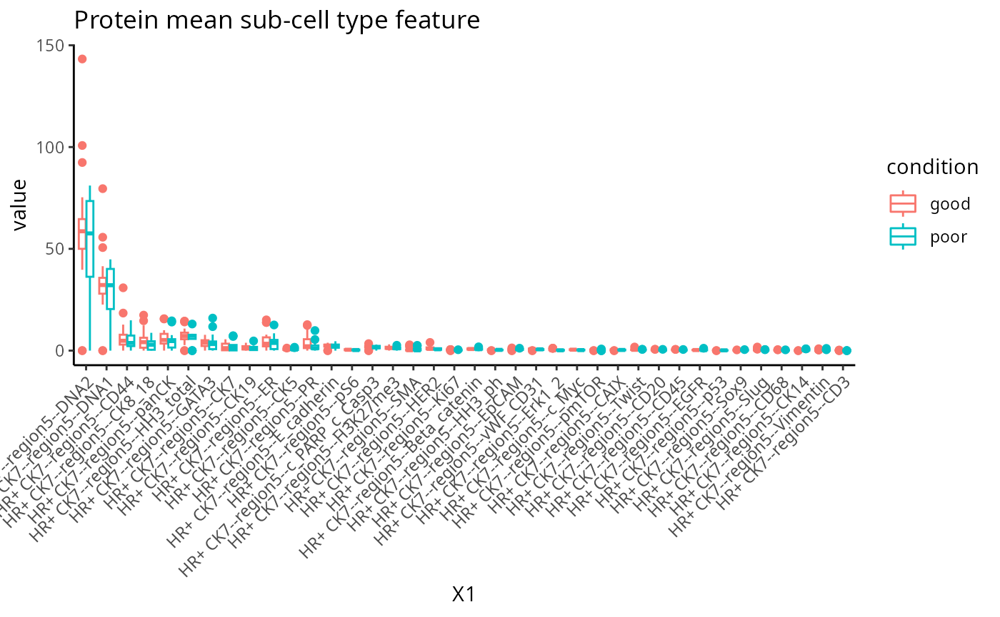
Association study report
To accommodate for easier interpretation of the features,
scFeatures contains a function
run_association_study_report that enables the user to
readily visualise and explore all generated features with one line of
code. This should be used with caution as depending on the number of
cell-types considered, some of the automatically-generated graphics may
not be the most efficient way for interpretation.
In the code below we perform the following tasks:
- Specify a folder to store the html report. Using the function
getwd()we specify that we will store it in the current working directory.
- Specify a folder to store the html report. Using the function
- A small
for loopis created to select all the samples associated with good and poor prognosis and generate a new scfeatures_result. This step is only necessary if the comparison of interest is a subset of all your data.
- A small
- Run the function
run_association_study_report()
- Run the function
## Step 1
output_folder <- getwd()
## Step 2
scfeatures_result_new <- scfeatures_result
for (i in 1:13){
thisfeature <- scfeatures_result[[i]]
thisfeature <- thisfeature[ grep("poor|good", rownames(thisfeature )), ]
scfeatures_result_new[[i]] <- thisfeature
}
## Step 3
run_association_study_report(scfeatures_result_new, output_folder )Can we estimate recurrence risk?
Recurrence risk estimation is a fundamental concern in medical
research, particularly in the context of patient survival analysis. In
this section, we will estimate recurrence risk using the molecular
representation of individuals generated from scFeatures to
build a survival model. We will use classifyR to build the survival
model. The patient outcome is time-to-event, so, by default, ClassifyR
will use Cox proportional hazards ranking to choose a set of features
and also Cox proportional hazards to predict risk scores. We will also
demonstrate other available models in ClassifyR.
Building a survival model
Recall in the previous section that we have stored the 13 matrices of
different feature types in a list. Instead of manually retrieving each
matrix from the list to build separate models, classifyR can directly
take a list of matrices as an input and run a repeated cross-validation
model on each matrix individually. Below, we run 5 repeats of 5-fold
cross-validation. A high score indicates prognosis of a worse outcome
than a lower risk score. Although we have provided the code below, to
save time, just load the prepared RDS file
classifyr_result_IMC.rds and we will focus on the
interpretation in this workshop.
# We use the following variables:
# timeRFS: "Time to Recurrence-Free Survival." It is the time period until recurrence occurs.
# eventRFS: "Event in Recurrence-Free Survival."It indicates whether the event has occurred.
# Breast.Tumour.Laterality: Laterality of tumors, eg, whether the tumor is located in left or right.
# ER.Status: Whether the tumor is ER positive or ER negative.
# Inferred.Menopausal.State: of the patient.
# Grade: of the tumor.
# Size: of the tumor.
usefulFeatures <- c("Breast.Tumour.Laterality", "ER.Status", "Inferred.Menopausal.State", "Grade", "Size")
nFeatures <- append(list(clinical = 1:3), lapply(scfeatures_result, function(metaFeature) 1:5))
clinicalAndOmics <- append(list(clinical = clinical), scfeatures_result)
### generate classfyr result
classifyr_result <- crossValidate(clinicalAndOmics, c("timeRFS", "eventRFS"),
extraParams = list(prepare = list(useFeatures = list(clinical = usefulFeatures))),
nFeatures = nFeatures, nFolds = 5, nRepeats = 5, nCores = 5)
classifyr_result <- readRDS("~/biocasia_data/classifyr_result_IMC.rds")Cox proportional hazards is a classical statistical method, as opposed to machine learning methods like Random survival forest. These machine learning methods can build remarkably complex relationships between features, however their running time can be much longer than Cox proportional hazards. We use feature selection to limit the number of features considered to at most 100 per metafeature and to save time, you can just load the prepared RDS file. We will compare the predictive performance between these methods.
nFeatures <- append(list(clinical = 1:3), lapply(scfeatures_result[2:length(scfeatures_result)], function(metaFeature) min(100, ncol(metaFeature))))
survForestCV <- crossValidate(clinicalAndOmics, outcome, nFeatures = nFeatures,
classifier = "randomForest",
nFolds = 5, nRepeats = 5, nCores = 5)
survForestCV <- readRDS("~/biocasia_data/survForestCV.RDS")Visualising the model performance of individual metafeatures
To examine the distribution of prognostic performance, use
performancePlot. Currently, the only metric for
time-to-event data is C-index and that will automatically be used
because the predictive model type is tracked inside of the result
objects.
## Make axis label 45 degree to improve readiability
tilt <- theme(axis.text.x = element_text(angle = 45, vjust = 1, hjust = 1))
## Putting two sets of cross-validation results together
multiresults <- append(classifyr_result, survForestCV)
ordering <- c("clinical", names(scfeatures_result))
performancePlot(multiresults,
characteristicsList = list(x = "Assay Name",
row = "Classifier Name"),
orderingList = list("Assay Name" = ordering)) +
tilt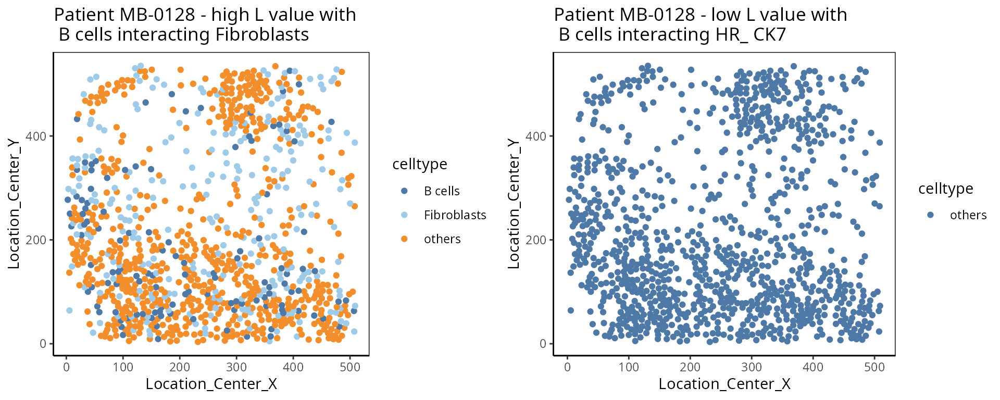
Note how the resultant plot is a ggplot2 object and can
be further modified. The same code could be used for a categorical
classifier because the random forest implementation provided by the
ranger package has the same interface for both. We will
examine feature selection stability with selectionPlot.
selectionPlot(multiresults,
characteristicsList = list(x = "Assay Name", row = "Classifier Name"),
orderingList = list("Assay Name" = ordering)) + tilt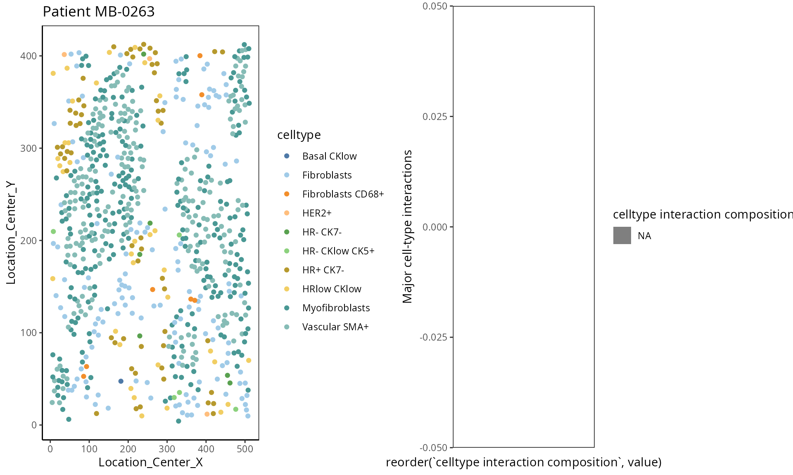
distribution(classifyr_result[[1]], plot = FALSE)## assay feature proportion
## 1 clinical Inferred.Menopausal.State 1Using samplesMetricMap compare the per-sample C-index
for Cox models for all kinds of metafeatures.
library(grid)
samplesMetricMap(classifyr_result)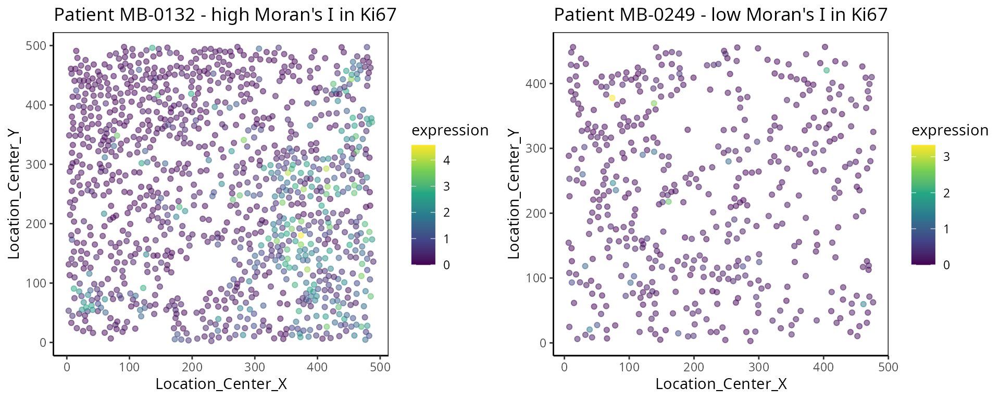
## TableGrob (2 x 1) "arrange": 2 grobs
## z cells name grob
## 1 1 (2-2,1-1) arrange gtable[layout]
## 2 2 (1-1,1-1) arrange text[GRID.text.6176]A few samples are predicted better by some metafeatures than others.
The per-sample C-index is a metric unique to ClassifyR. Models and
feature selection approaches may be seen in the vignette or listed by
available().
Interactive Q&A:
Q7: Is the highest predictive performance the only way to choose the best model or can other models be better for other reasons?
Does each individual require a different collection of features?
Using samplesMetricMap compare the per-sample C-index
for Cox models for all kinds of metafeatures.
library(grid)
samplesMetricMap(classifyr_result)## TableGrob (2 x 1) "arrange": 2 grobs
## z cells name grob
## 1 1 (2-2,1-1) arrange gtable[layout]
## 2 2 (1-1,1-1) arrange text[GRID.text.6373]Interactive Q&A:
Q8: Are spatial features important for predicting recurrence? Does it hold for all individuals?
Appendix
Explanation of spatial features
- L function:
The L function is a spatial statistic used to assess the spatial distribution of cell types. It assesses the significance of cell-cell interactions, by calculating the density of a cell type with other cell types within a certain radius. High values indicate spatial association, low values indicate spatial avoidance.
one_sample <- data_sce[ , data_sce$metabricId == "MB-0128" ]
one_sample <- data.frame( colData(one_sample) )
one_sample$celltype <- one_sample$description
# select certain cell types to examine the interaction
index <- one_sample$celltype %in% c("B cells", "Fibroblasts")
one_sample$celltype[!index] <- "others"
a <-ggplot( one_sample, aes(x = Location_Center_X , y = Location_Center_Y, colour = celltype )) + geom_point() + ggtitle( "Patient MB-0128 - high L value with \n B cells interacting Fibroblasts") + scale_colour_manual(values = c("coral" , "steelblue" , "grey70"))
one_sample$celltype <- one_sample$description
index <- one_sample$celltype %in% c("B cells", "HR- CK7-")
one_sample$celltype[!index] <- "others"
b <- ggplot( one_sample, aes(x = Location_Center_X , y = Location_Center_Y, colour = celltype )) + geom_point() + ggtitle( "Patient MB-0128 - low L value with \n B cells interacting HR_ CK7")+ scale_colour_manual(values = c("coral" , "steelblue" , "grey70"))
ggarrange(plotlist = list(a,b))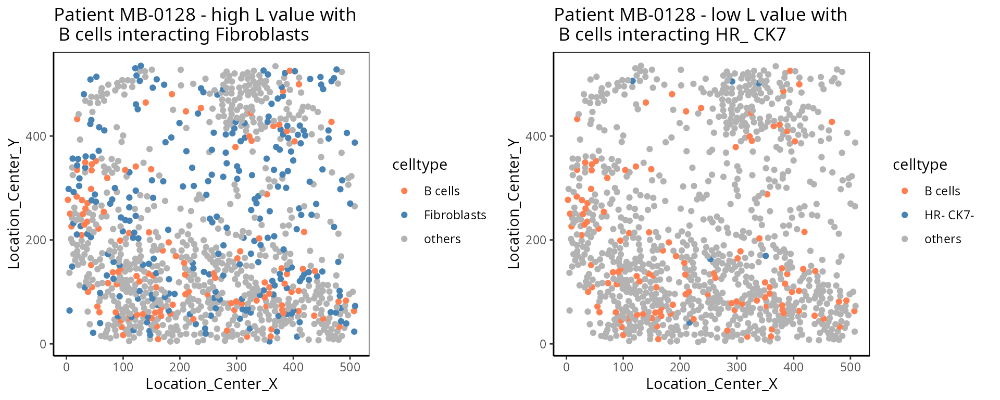
- Cell type interaction composition:
We calculate the nearest neighbours of each cell and then calculate the pairs of cell types based on the nearest neighbour. This allows us to summarise it into a cell type interaction composition.
one_sample <- data_sce[ , data_sce$metabricId == "MB-0263" ]
one_sample <- data.frame( colData(one_sample) )
one_sample$celltype <- one_sample$description
a <-ggplot( one_sample, aes(x = Location_Center_X , y = Location_Center_Y, colour = celltype )) + geom_point() + scale_colour_tableau() + ggtitle( "Patient MB-0263")
feature <- scfeatures_result$celltype_interaction
to_plot <- data.frame( t( feature[ grep("MB-0263", rownames(feature)) , ]) )
to_plot$feature <- rownames(to_plot)
colnames(to_plot) <- c("value", "celltype interaction composition")
to_plot <- to_plot[ to_plot$value > 0.03 , ]
b <- ggplot(to_plot, aes(x = reorder(`celltype interaction composition`, value) , y = value, fill=`celltype interaction composition`)) + geom_bar(stat="identity" ) + ylab("Major cell type interactions") +
theme(axis.text.x = element_text(angle = 45, vjust = 1, hjust=1))
ggarrange(plotlist = list(a,b))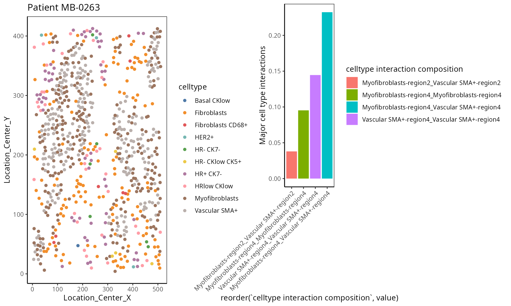
- Moran’s I:
Moran’s I is a spatial autocorrelation statistic based on both location and values. It quantifies whether similar values tend to occur near each other or are dispersed.
high <- data_sce["Ki67", data_sce$metabricId == "MB-0132" ]
high_meta <- data.frame( colData(high) )
high_meta$expression <- as.vector(logcounts( high))
low <- data_sce["Ki67", data_sce$metabricId == "MB-0249" ]
low_meta <- data.frame( colData(low) )
low_meta$expression <- as.vector(logcounts(low))
a <- ggplot(high_meta, aes(x = Location_Center_X , y = Location_Center_Y, colour =expression)) + geom_point(alpha=0.5) + scale_colour_viridis_c() + ggtitle("Patient MB-0132 - high Moran's I in Ki67")
b <- ggplot(low_meta, aes(x = Location_Center_X , y = Location_Center_Y, colour =expression)) + geom_point(alpha=0.5) + scale_colour_viridis_c() + ggtitle("Patient MB-0249 - low Moran's I in Ki67")
ggarrange(plotlist = list(a,b))- Nearest Neighbor Correlation:
This metric measures the correlation of proteins/genes between a cell and its nearest neighbour cell.
plot_nncorrelation <- function(thissample , thisprotein){
sample_name <- thissample
thissample <- data_sce[, data_sce$metabricId == sample_name]
exprsMat <- logcounts(thissample)
# calculate NN correlation
cell_points_cts <- spatstat.geom::ppp(
x = as.numeric(thissample$Location_Center_X ), y = as.numeric(thissample$Location_Center_Y),
check = FALSE,
xrange = c(
min(as.numeric(thissample$Location_Center_X)),
max(as.numeric(thissample$Location_Center_X))
),
yrange = c(
min(as.numeric(thissample$Location_Center_Y)),
max(as.numeric(thissample$Location_Center_Y))
),
marks = t(as.matrix(exprsMat))
)
value <- spatstat.explore::nncorr(cell_points_cts)["correlation", ]
value <- value[ thisprotein]
# Find the indices of the two nearest neighbors for each cell
nn_indices <- nnwhich(cell_points_cts, k = 1)
protein <- thisprotein
df <- data.frame(thiscell_exprs = exprsMat[protein, ] , exprs = exprsMat[protein,nn_indices ])
p <- ggplot(df, aes( x =thiscell_exprs , y = exprs , colour = exprs )) +
geom_point(alpha = 0.3) + ggtitle(paste0( "Patient ", sample_name , " nn_corr = " , round(value, 2) )) + scale_colour_viridis_c() + xlab("This cell expression") + ylab("Neighbouring cell expression")
return (p )
}
p1 <- plot_nncorrelation("MB-0605", "HER2")
p2 <- plot_nncorrelation("MB-0258", "HER2")
ggarrange(plotlist = list(p1, p2))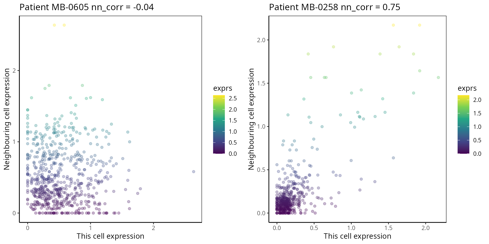
SessionInfo
## R version 4.3.1 (2023-06-16)
## Platform: x86_64-pc-linux-gnu (64-bit)
## Running under: Debian GNU/Linux 12 (bookworm)
##
## Matrix products: default
## BLAS: /usr/lib/x86_64-linux-gnu/openblas-pthread/libblas.so.3
## LAPACK: /usr/lib/x86_64-linux-gnu/openblas-pthread/libopenblasp-r0.3.21.so; LAPACK version 3.11.0
##
## locale:
## [1] LC_CTYPE=C.UTF-8 LC_NUMERIC=C LC_TIME=C.UTF-8
## [4] LC_COLLATE=C.UTF-8 LC_MONETARY=C.UTF-8 LC_MESSAGES=C.UTF-8
## [7] LC_PAPER=C.UTF-8 LC_NAME=C LC_ADDRESS=C
## [10] LC_TELEPHONE=C LC_MEASUREMENT=C.UTF-8 LC_IDENTIFICATION=C
##
## time zone: Australia/Sydney
## tzcode source: system (glibc)
##
## attached base packages:
## [1] grid stats4 stats graphics grDevices utils datasets
## [8] methods base
##
## other attached packages:
## [1] reshape_0.8.9 scran_1.28.1
## [3] scater_1.28.0 scuttle_1.10.1
## [5] spatstat_3.0-6 spatstat.linnet_3.1-1
## [7] spatstat.model_3.2-8 rpart_4.1.21
## [9] spatstat.explore_3.2-5 nlme_3.1-163
## [11] spatstat.random_3.2-1 spatstat.geom_3.2-7
## [13] spatstat.data_3.0-3 survminer_0.4.9
## [15] ggpubr_0.6.0 tidyr_1.3.0
## [17] scattermore_1.2 plotly_4.10.3
## [19] limma_3.56.2 dplyr_1.1.3
## [21] spicyR_1.12.0 ggthemes_4.2.4
## [23] lisaClust_1.9.2 ClassifyR_3.5.21
## [25] survival_3.5-7 BiocParallel_1.34.2
## [27] MultiAssayExperiment_1.26.0 generics_0.1.3
## [29] scFeatures_0.99.27 ggplot2_3.4.4
## [31] SingleCellExperiment_1.22.0 SummarizedExperiment_1.30.2
## [33] Biobase_2.60.0 GenomicRanges_1.52.0
## [35] GenomeInfoDb_1.36.1 IRanges_2.34.1
## [37] S4Vectors_0.38.1 BiocGenerics_0.46.0
## [39] MatrixGenerics_1.12.2 matrixStats_1.0.0
##
## loaded via a namespace (and not attached):
## [1] fs_1.6.3 ProtGenerics_1.32.0
## [3] GSVA_1.48.2 spatstat.sparse_3.0-3
## [5] bitops_1.0-7 httr_1.4.7
## [7] RColorBrewer_1.1-3 numDeriv_2016.8-1.1
## [9] EnsDb.Hsapiens.v79_2.99.0 tools_4.3.1
## [11] backports_1.4.1 DT_0.30
## [13] utf8_1.2.4 R6_2.5.1
## [15] HDF5Array_1.28.1 mgcv_1.9-0
## [17] lazyeval_0.2.2 rhdf5filters_1.12.1
## [19] withr_2.5.1 gridExtra_2.3
## [21] prettyunits_1.2.0 cli_3.6.1
## [23] textshaping_0.3.7 labeling_0.4.3
## [25] sass_0.4.7 survMisc_0.5.6
## [27] SingleCellSignalR_1.12.0 pkgdown_2.0.7
## [29] Rsamtools_2.16.0 systemfonts_1.0.5
## [31] ggupset_0.3.0 R.utils_2.12.2
## [33] rstudioapi_0.15.0 RSQLite_2.3.1
## [35] shape_1.4.6 BiocIO_1.10.0
## [37] crosstalk_1.2.0 gtools_3.9.4
## [39] car_3.1-2 scam_1.2-14
## [41] Matrix_1.6-1.1 ggbeeswarm_0.7.2
## [43] fansi_1.0.5 abind_1.4-5
## [45] R.methodsS3_1.8.2 lifecycle_1.0.3
## [47] yaml_2.3.7 edgeR_3.42.4
## [49] carData_3.0-5 gplots_3.1.3
## [51] rhdf5_2.44.0 BiocFileCache_2.8.0
## [53] Rtsne_0.16 blob_1.2.4
## [55] promises_1.2.1 dqrng_0.3.1
## [57] crayon_1.5.2 lattice_0.22-5
## [59] cowplot_1.1.1 beachmat_2.16.0
## [61] msigdbr_7.5.1 GenomicFeatures_1.52.1
## [63] annotate_1.78.0 KEGGREST_1.40.0
## [65] magick_2.8.1 pillar_1.9.0
## [67] knitr_1.44 metapod_1.8.0
## [69] boot_1.3-28.1 rjson_0.2.21
## [71] codetools_0.2-19 glue_1.6.2
## [73] V8_4.4.0 data.table_1.14.8
## [75] vctrs_0.6.4 png_0.1-8
## [77] gtable_0.3.4 cachem_1.0.8
## [79] xfun_0.40 S4Arrays_1.0.6
## [81] mime_0.12 pheatmap_1.0.12
## [83] iterators_1.0.14 KMsurv_0.1-5
## [85] statmod_1.5.0 bluster_1.10.0
## [87] ellipsis_0.3.2 bit64_4.0.5
## [89] progress_1.2.2 filelock_1.0.2
## [91] rprojroot_2.0.3 bslib_0.5.1
## [93] irlba_2.3.5.1 vipor_0.4.5
## [95] KernSmooth_2.23-22 colorspace_2.1-0
## [97] DBI_1.1.3 tidyselect_1.2.0
## [99] proxyC_0.3.4 bit_4.0.5
## [101] compiler_4.3.1 curl_5.0.2
## [103] AUCell_1.22.0 graph_1.78.0
## [105] BiocNeighbors_1.18.0 xml2_1.3.5
## [107] desc_1.4.2 DelayedArray_0.26.6
## [109] rtracklayer_1.60.0 scales_1.2.1
## [111] caTools_1.18.2 rappdirs_0.3.3
## [113] SpatialExperiment_1.11.2 stringr_1.5.0
## [115] digest_0.6.33 goftest_1.2-3
## [117] minqa_1.2.6 spatstat.utils_3.0-4
## [119] rmarkdown_2.25 XVector_0.40.0
## [121] htmltools_0.5.6.1 pkgconfig_2.0.3
## [123] lme4_1.1-34 sparseMatrixStats_1.12.2
## [125] dbplyr_2.4.0 fastmap_1.1.1
## [127] ensembldb_2.24.0 htmlwidgets_1.6.2
## [129] rlang_1.1.1 GlobalOptions_0.1.2
## [131] shiny_1.7.5.1 DelayedMatrixStats_1.22.1
## [133] farver_2.1.1 jquerylib_0.1.4
## [135] zoo_1.8-12 jsonlite_1.8.7
## [137] R.oo_1.25.0 BiocSingular_1.16.0
## [139] RCurl_1.98-1.12 magrittr_2.0.3
## [141] GenomeInfoDbData_1.2.10 Rhdf5lib_1.22.0
## [143] munsell_0.5.0 Rcpp_1.0.11
## [145] viridis_0.6.4 ape_5.7-1
## [147] babelgene_22.9 stringi_1.7.12
## [149] zlibbioc_1.46.0 MASS_7.3-60
## [151] plyr_1.8.9 ggrepel_0.9.4
## [153] parallel_4.3.1 deldir_1.0-9
## [155] Biostrings_2.68.1 splines_4.3.1
## [157] tensor_1.5 multtest_2.56.0
## [159] hms_1.1.3 circlize_0.4.15
## [161] locfit_1.5-9.8 igraph_1.5.1
## [163] ggsignif_0.6.4 reshape2_1.4.4
## [165] biomaRt_2.56.1 ScaledMatrix_1.8.1
## [167] XML_3.99-0.14 evaluate_0.22
## [169] RcppParallel_5.1.7 BiocManager_1.30.22
## [171] nloptr_2.0.3 tweenr_2.0.2
## [173] foreach_1.5.2 httpuv_1.6.12
## [175] EnsDb.Mmusculus.v79_2.99.0 purrr_1.0.2
## [177] polyclip_1.10-6 km.ci_0.5-6
## [179] ggforce_0.4.1 rsvd_1.0.5
## [181] broom_1.0.5 xtable_1.8-4
## [183] restfulr_0.0.15 AnnotationFilter_1.24.0
## [185] rstatix_0.7.2 later_1.3.1
## [187] viridisLite_0.4.2 class_7.3-22
## [189] ragg_1.2.6 tibble_3.2.1
## [191] lmerTest_3.1-3 beeswarm_0.4.0
## [193] memoise_2.0.1 AnnotationDbi_1.62.2
## [195] GenomicAlignments_1.36.0 cluster_2.1.4
## [197] concaveman_1.1.0 GSEABase_1.62.0Acknowledgment
The authors thank all their colleagues, particularly at The University of Sydney, Sydney Precision Data Science and Charles Perkins Centre for their support and intellectual engagement. Special thanks to Ellis Patrick, Shila Ghazanfar, Andy Tran for guiding and supporting the building of this workshop.